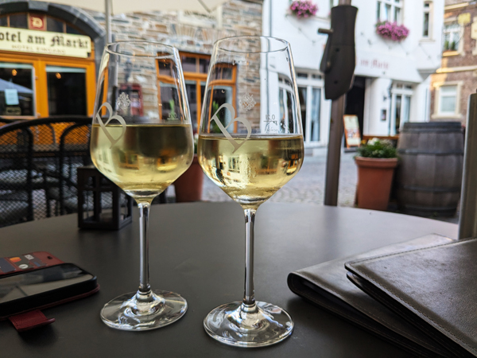
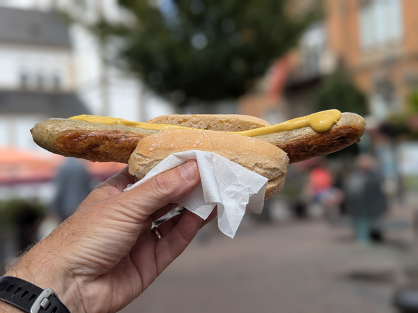
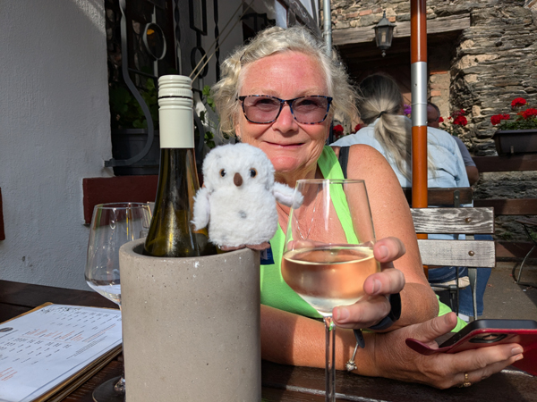
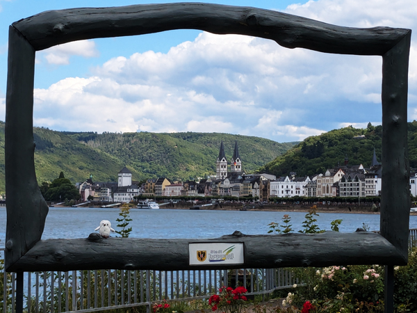
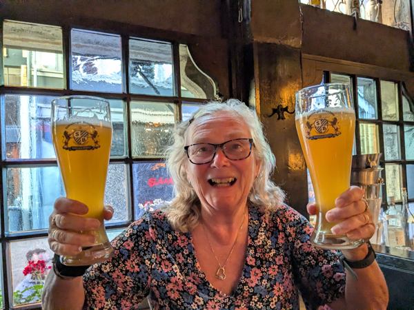
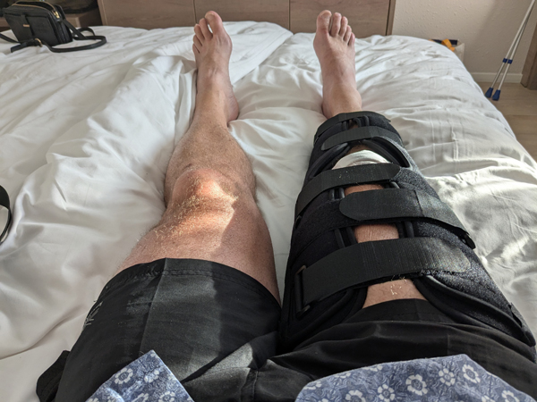
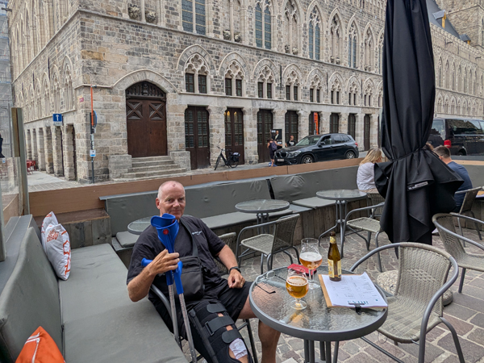

Sunday 13th July - Karlstadt to Lohr am Main - 21.8 miles - 396 ft. We checked out of the hotel at 10:00 and headed off on our bikes again. First stop was Wirtshaus Alt Franken to retrieve the hoody that I had left in there last night. We then went out to McDonalds for breakfast before going back into the old town to rejoin the Mainradweg.
We had only planned to do about 10 miles today before getting the train back to Schweinfurt but when we got Gemünden we decided to go a bit further. We were 14 km from Lohr am Main and had 67 minutes before a train left from there direct to Schweinfurt so we decided to keep going. We got to the station in Lohr with about 10 minutes to spare although the train was 15 minutes late by the time it eventually arrived. It somehow made up most of the time at Würzburg and got into Schweinfurt just a minute late at 14:02. We bought lunch from a bakery at the station and ate it sat by the river before checking back into the Mercure Hotel again.
We did not do a lot for the rest of the day. Roz wanted to watch the Wimbledon men's final which did not start until 5. I went out for a walk to do my steps and then went out again to buy take-away pizzas. We ate them while watching the end of the final with our welcome drinks. Another early night.
Monday 14th July After left-over pizza for breakfast, we walked across town to collect the car. We got out of the car park with no problems with the €10 ticket we had bought from the B&B 6 days ago. We drove back to the Mercure collected our bikes and luggage and were on our way towards Bacharach by about 11:15.
We came off the motorway at Würzburg to go to a supermarket. We were looking for Augustiner beer but they did not have any so we just bought stuff for lunch. We stopped for petrol and the garage did sell Augustiner so we were able to stock up before leaving Bavaria.
We did the rest of the journey without stopping as the weather was not really good enough for a picnic stop. We arrived in Bacharach at about 14:45 and drove to the apartment we have stayed in a couple of times before. We had been unable to get in touch with the owner and when we arrived, it appeared that he did not know anything about our reservation and the apartment was not ready. After a few slightly worrying minutes, he did remember our booking and got in touch someone to come and clean the apartment.
We went for a walk into the centre of Bacharach, stopping to eat our lunch sat by the river. We took out the money to pay for the next three nights and walked back by which time the apartment was ready. We got all our stuff from the car and after sorting ourselves out, went out on our bikes. It was already getting on for 5pm by now and we did not want to go far but we needed to buy food for tonight. We cycled to Oberwesel, about four miles away. After a look around the town, we went for a drink in the centre and then back out to the Rewe.

After buying what we needed we cycled back to Bacharach and stopped for a drink in the centre. The place we had planned to stop at was closed so we had a bottle of wine at Zum Grünen Baum before cycling back up the hill to the apartment. We ate on the terrace overlooking The Rhine. The view from the terrace is the reason we keep returning to this apartment. It is a lovely place to sit in the evening and as nice as being in a restaurant in the town. We had a few drinks with the meal and then moved inside for a final glass of wine before bed.
Tuesday 15th July - Bacharach <--> Koblenz - 65.7 miles 705 ft. We had breakfast on the terrace and then sorted out the washing that we needed for the last few days of the trip. Once that was done, I went for a walk into Bacharach while Roz returned to the terrace.
Once I was back from my walk, we got ready to go out on our bikes. We went out separately today. I wanted to do a longer ride. So went to Koblenz and back. I left at 11:30 and cycled a couple of miles before getting the ferry over to Kaub. I cycled down that side of the river until crossing the bridge into Koblenz. After a lot of confusion due to diversions, I made it out to Deutsches Eck. I was planning on stopping for lunch in Koblenz but got fed up with the lack of direction signs round the road works. I saw a sign that took me back to the river so kept going. I got as far as Boppard before stopping for lunch at about 3:30.

After eating in the main square, I had about 17 miles left to get back to Bacharach. I caught Roz up at Oberwesel. She had gone just beyond Boppard, a ride of about 40 miles. We cycled back together from there. Todays ride meant that I have cycled 1004 miles so far on this trip, more than I had hoped to do. I had originally set a target of 500 miles as I did not know how well I would be following my cancer treatment. I had changed that target to 750 and then 1002 miles as I did 1001 on last years trip. We have now both cycled more this year than we did last year.

We had a similar evening to yesterday. We went for a drink in Posthof Bacharach a nice beer garden in the centre that we had not been to before. Kurpfälzische Münze was open today and we had a bottle of wine in there before cycling back to the apartment. We ate on the terrace again with a few more drinks including my first ever alcohol-free beer (bought by mistake.... and actually very good).
Wednesday 15th July - Bacharach <--> Koblenz - 63.9 miles 641 ft. We did separate bike rides again today with us both doing similar distances to yesterday. I went out slightly earlier and went back to Koblenz again. This time, I did not cross the river but stayed on the same side all the way there and back. I did not go to Deutsches Eck as I could not be bothered with the diversions again. Instead, I went straight to the station, had lunch and started heading back. I stopped in Boppard on the way back and spent an hour or so walking round the town and along the river before completing the ride back to Backarach.

Roz did cross the river and cycled down the other side before crossing back to Boppard. At 5:30, we met up again at Kleines Brauhaus where I had my first litre glass of beer since getting to Germany. We went back to Zum Grünen Baum for a bottle of wine again before cycling the final mile back to the apartment. As with the last two nights, we ate on the terrace with a few more drinks.
Thursday 16th July We left Bacharach at 11:00. Once again, we have really enjoyed our stay here and are already thinking about coming back next year. We had a supermarket stop in Oberwesel then continues non-stop to Aachen. We had decided to stay at the Mercure Europlatz. It is a bit out of the centre but has a swimming pool. We were given a privilege room which meant we were given quite a bit of additional alcohol and free parking.
After sorting out our things we went to the pool. It was Baldy's funeral this afternoon and we watched a stream of that before returning to the room for showers. We went out at 5:15 and walked to Aachener Brauhaus in town. We had seats in the small bar area so had one in there before walking to Wirtshaus am Hühnerdieb where we had meals and a couple more drinks. We then visited Zum goldenen Einhorn, Postwagen Zum Ratskeller and Domkeller having at least one drink in each one.

At this point we really should have gone back to the hotel as we had already had more than enough. However, we stopped for more drinks in Kölnthor Braustube and City Pub before spending a couple of hours trying to find the hotel despite it being about 15 minutes walk away. A messy end to what had been a very enjoyable evening.
Friday 17th July I woke up in a lot of pain and unable to put any weight on my right leg. At some point on the way home, I had fallen over and done quite a bit of damage to my knee. It was very painful to move and I could not really do a lot apart from sit in the room feeling sorry for myself while Roz was at the pool. We had planned to cycle to the two Dutch breweries this afternoon but it was instantly obvious that this was not going to happen.
By 2pm there was no sign of things improving and we decided I needed to go to hospital. After being wheeled to the car in an office chair from the room, Roz drove me to Luisenhospital a couple of miles away. Everything was a bit slow here but I eventually saw a doctor who sent me for an x-ray. After more waiting around the doctor confirmed that I had fractured part of my tibia. There was not a lot they could do about this apart from put my leg in a brace and give me a pair of crutches. I may need an operation to put screws in when we get home but will need a CT scan to determine this.
The whole thing took almost five hours and cost us approximately €200, mainly for the brace and crutches. It does mean that I will have to rest for the next six weeks or so and Roz is going to have to drive the car all the way home. It is particularly frustrating as I seem to have got back to full fitness following my cancer treatment and have really enjoyed the cycling on this trip.

We got back to the hotel by about 7:45. We were both worn out by this time and I was not really capable of going out anywhere. We shared a sandwich and had a cup of tea before having an early night
Saturday 18th July We had breakfast in the room and then made it down to the pool for an hour or so. Roz made several trips to the car with the luggage and collected me from the main hotel entrance. I am just about able to get around on the crutches but movement is not easy and things like getting in and out of the car are going to take a bit of practice. We left the hotel at 11:50 and drove to Rewe to buy food for the journey.
We had a stop for lunch and a stop for petrol and arrived in Ypres just before 4. We parked the car just round the corner from the hotel (B&B Het Kapiittel) and Roz walked to a nearby bar to collect the key. After she had moved some of the luggage into the room, she came back to collect me and I had my first attempt at getting up a flight of stairs. Not the easiest of things to do but I got there eventually.
Roz went out for a look around Ypres but there was a limit to how many times I wanted to attempt the stairs so I stayed in the room.
We did go out just before 7. I would have probably been better off staying in the room but it was the last night of our trip and it would have been a very sad ending to have just spent it sat in a hotel room. We returned to the bar that Roz had picked the keys up from, Aux Trois Savoyards as the owner of the hotel also owns the bar and gives guests a free beer.
The bar was about 400m away but took me a long time to get to. It was the first time I had tried any distance on the crutches and it was very hard work. However, it was worth the effort. The bar was just a bit away from the main square and we could sit outside with views of the cloth market, my favourite sight in Ypres. We ordered a sharing plate of meat and cheese and had our free beers. Roz went off at 8pm to watch the last post at the Menin Gate but that would have been too much walking for me. We had one more beer before another slow walk back to the hotel.

Although not quite the evening we had planned, it was all very enjoyable and I was glad to have been able to go out at all. Back at the hotel we joined the video chat for a while before bed.
Sunday 20th July We left the hotel at 8 and stopped at a supermarket on the outskirts of Ypres to buy food for the journey. We continued from there to Adenkirche where Roz bought about 40 bottles of Mort Subite. It should have only been about 35 minutes from there to the port at Calais but as we were getting closer we got news of a security alert that was causing delays. We got to within about a mile of the port and then joined three lanes of stationary traffic.
We had no idea how long we would be stuck here but it looked as if we could be in for a long delay. However at 11:15, it suddenly started moving. We managed to get through check-in very quickly but were told that we would be on the 13:20 sailing not the 12:00 that we had booked. Immigration was fairly quick and we took our place in the queue. After a while, someone in a van told a few cars in the next queue to follow her. We had not been told to go as well but decided to go anyway. We drove round most of the port before joining the queue for the 12:00 ferry.
We got on the boat fairly quickly.... ahead of a lot of cars that had been waiting longer than us.... and that were supposed to be on this ferry. We had told them about my leg when we checked in so got parked near a lift and it was easy enough for me to get up to the seating area where we had our lunch. In the end we were only 15 minutes late leaving Calais which was a lot better than it had looked at one point. By the time we docked, we were only about five minutes late.
The journey back from Dover was relatively good. There was the inevitable hold up on the M25 but even this was only for about 10 minutes. We stopped in Basingstoke to buy milk and food for tonight and were back in Kingsclere by 15:40.